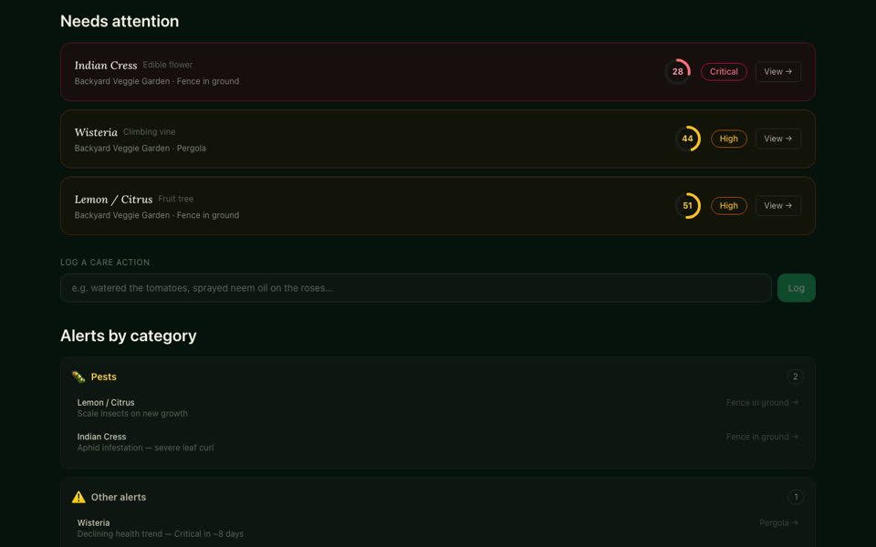

baron guardblocks a denied action before the tool runs, where the runtime allows it, and labels every rule honestly as enforced or merely instructed.- Started from a first-party audit: a documented agent protocol measured 0.53 operational fidelity, with 18 of 40 handoffs left open.
- Ships its own evaluation harness: mutation-kill rate, reviewer escape rate, claim drift and stall count.
- 821 tests, 33 architecture decision records and 51 merged pull requests. MIT licensed, two runtime dependencies, governs its own repo and the agent fleet behind Shuttler.

Vikram GodboleEngineering leader who still builds.
Twelve years at Walmart, most recently as Senior Director of Software Engineering on Walmart Commerce Platform.
These days I build agentic systems hands-on, mostly in the open. Barony, my governance framework for AI coding agents, is on PyPI.
What I build
Agentic systems with an evaluation record
I build the way I ran platforms: contracts, gates in CI and numbers measured against ground truth. Where agents wrote the code, I directed the fleet and say so.
- Deterministic checks, such as figure comparison and attribution-strength arithmetic, decide support. A language model only decides what a sentence is about, never whether it is supported.
- An independent adversary repo injects known-bad claims without seeing the detector code. The detector killed 37 of 37 in a small development-time corpus, after two earlier rounds exposed and fixed real detector gaps.
- Flagged 0 of 52 harmless edits in the invariance run: a small sample, so the false-positive rate is bounded, not proven zero.
- Postgres ledger with row-level security, served over HTTP and MCP; an agent-to-agent orchestrator; traces that carry ledger references, never claim content. 437 tests across a 14-package workspace.
- 204 merged pull requests between May 13 and June 7, 2026, built with a directed agent fleet of developer, analyst and designer agents. No commits since June 7, 2026.
- pgvector similarity search over per-plant embeddings, built from the vision model's structured description of each plant.
- Per-feature model fallback chains with rate-limit retry, and a prompt-injection guard on model inputs.
- About 1,400 unit and integration tests and 137 end-to-end tests.

- Shuttle detection 0.992 on one clip (238 of 240 within 25 px) against a 0.85 gate written into the eval harness.
- Rally recall with a vision-language model: 0.73 (11 of 15) on a held-out clip and 0.58 to 0.70 on a second set it was tuned on. The geometry path scored 0.00 on real multi-court footage.
- Eight capture-ceiling probes, one replicated at a second venue, showed what ordinary footage cannot support, so line calls, winners and landing points are held and the report says so.
- 1,184 tests and 178 merged pull requests from a directed agent fleet. The anonymization guard fails closed: when unsure whether a person is a minor, the pipeline blurs. Blurring runs offline, not in the hosted beta.
- Thesis
- Meaning gets trapped in text boxes. Change the audience, the evidence or the length, and someone rebuilds the deck by hand. Keep the argument as structured source and compile it instead.
- Method
- The model proposes, the application decides. Deterministic repair runs first and a model is called only on a trigger, with spend reserved before dispatch. Every render is checked in Chromium.
- Build
- Owner-gated rounds of an implement agent, a review agent and a CI gate. I ratify the design decisions; agents write the code.
Also built, now paused: a micro-drone hardware prototype.
Engagements and point of view
On agent governance, in public
I argue that agent autonomy has to be enforced and earned, not instructed. That is the case I make on panels and the reason Barony exists.
An instruction is not a control.
Reproducibility before autonomy.
In critical agentic applications, autonomy is earned progressively, one verified decision at a time.
-
Panelist
AI Realized: Agent Controls and the Governance Gap
SF Tech Week, San Francisco. Panel: Authority, Compliance, and Agent Interactions.
Why an instruction is not a control, and how to enforce agent authority before the tool call.
-
Panelist
Silicon Valley AI Summit, Imagination in Action: The Agent Attention Economy
Google Bay View, Mountain View.
Agent-first commerce, from the marketplace operator's seat.
-
Roundtable participant
MIT Media Lab Project NANDA roundtable on agentic AI and sandboxing
Palo Alto.
-
Mentor and semi-final judge
Internal marketplace AI hackathon, Walmart
Sunnyvale.
Where I've led
Twelve years at Walmart
Senior Director of Software Engineering, Walmart (2023 to 2026): Walmart Commerce Platform, then Local and Specialty Marketplace.
Platform scale, lean single-threaded ownership and AI in production. My organizations delivered the work below; the verbs say what was mine.
250+
Ran Walmart Commerce Platform
250+ engineers across the U.S. and India, through 5 Directors, 3 Distinguished Architects and 2 TPMs: iOS, Android and Web platforms, GraphQL, Accounts and Identity, end-to-end testing, SRE and release.
5
Business lines, one operating model
Single-threaded technology owner for five walmart.com business lines (~$150M GMV), owning roadmap and architecture. Scaled a lean pod model from one business line to five.
#49 of 50
Walmart's first restaurant marketplace
Backed Walmart's first restaurant marketplace when the backlog ranked it #49 of 50: re-ran the economics, won ~10 engineers and led Marketplace engineering from a 15-store pilot to 56 stores in under three months. The marketplace has since grown to 1,500+ stores.
3
Agentic systems in production
Pushed three agentic systems into production: a human-in-the-loop alcohol-license verification pipeline, an MCP and RAG catalog-onboarding assistant that removed 60+ ops hours a week, and an ops chat agent for seller technical troubleshooting.
~90M
Engineered for holiday peak
Holiday Captain for walmart.com's Thanksgiving peak, 2023 to 2024: platforms engineered for ~90M page views an hour, ~250K GraphQL TPS and 45K orders a minute.
~$6M/yr
Cloud cost, as champion
Cloud-cost champion for the VP organization: nine initiatives, including a Rust rewrite of the GraphQL gateway router, removed ~$6M a year of platform run-rate cost.
Contact
Let's talk.
Email is fastest. My full career history is on LinkedIn.